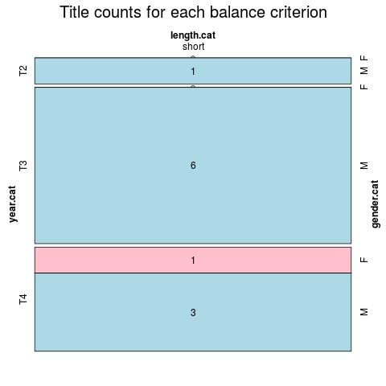

Click on a column heading to sort. Click on a text identifier to read the text (may not work in older browsers).
| Identifier | Encoding | Pages | Words | (Size) | Date (Slot) | Title | Author | Sex | Reprints |
|---|---|---|---|---|---|---|---|---|---|
| GR0009 | eltec-1 | 30 | 7957 | (short) | (T3) | Ἀλέξανδρος Ρίζος Ραγκαβής | M | low | |
| GRE0001 | eltec-1 | 14 | 4589 | (short) | ? (T4) | Ἰάκωβος Πολυλάς | M | unspecified | |
| GRE00010 | eltec-1 | 10 | 5489 | (short) | (T4) | Γιάννης Ψυχάρης | M | low | |
| GRE00011 | eltec-1 | 14 | 2499 | (short) | (T3) | Δημήτριος Βικέλας | M | high | |
| GRE0003 | eltec-1 | 7 | 1408 | (short) | n.d. (T3) | Δημήτριος Καμπούρογλου | M | unspecified | |
| GRE0004 | eltec-1 | 9 | 3302 | (short) | 1914 (T4) | Ἀλέξανδρος Παπαδιαμάντης | M | high | |
| GRE0005 | eltec-1 | 9 | 2091 | (short) | (T3) | Κώστας Πασαγιάνης | M | low | |
| GRE0006 | eltec-1 | 18 | 4362 | (short) | (T3) | Κώστας Κρυστάλλης | M | unspecified | |
| GRE0007 | eltec-1 | 8 | 2427 | (short) | ? (T4) | Αἰμιλία Δάφνη | F | low | |
| GRE0008 | eltec-1 | 10 | 2578 | (short) | ? (T3) | Εμμανουήλ Ροΐδης | M | high | |
| GRE0012 | eltec-1 | 24 | 5822 | (short) | (T2) | Ἀδαμάντιος Κοραῆς | M | medium |